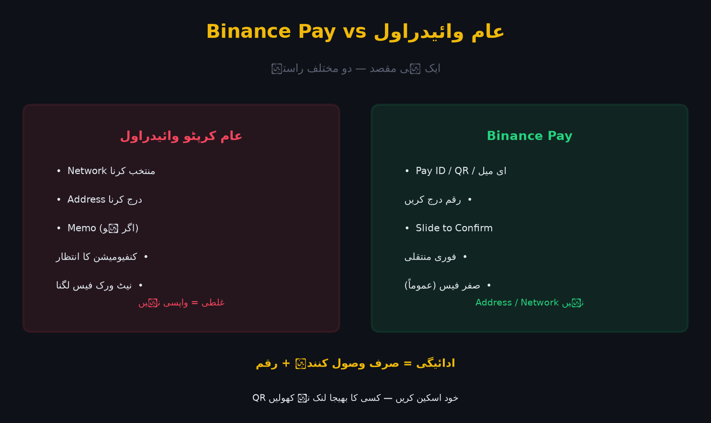

Binance Pay ایک "کرپٹو پیمنٹ گیٹ وے" ہے: آپ اپنے بائننس اکاؤنٹ سے منتخب شدہ کرپٹو سے کسی دوسرے صارف، مرچنٹ یا کاروبار کو براہِ راست ادائیگی کر سکتے ہیں — بغیر کسی بلاک چین ایڈریس، گیسی فیس یا لمبی تصدیق کے۔ یہی اس کی سب سے بڑی خوبی ہے: ادائیگی کا تجربہ عام موبائل بینکنگ جتنا آسان۔

تصویر 52.1: Binance Pay کا خاکہ — فرق: عام کریپٹو وائیدراول میں Address + Network درکار، مگر Pay میں صرف وصول کنندہ کا Pay ID/QR اور رقم۔
🎯 اس باب میں آپ سیکھیں گے
Binance Pay عام کرپٹو وائیدراول سے کیسے مختلف ہے
Pay ID، QR اور Request کیسے کام کرتے ہیں
کاروبار کے لیے پیمنٹ گیٹ وے کے فوائد
صفر فیس اور فوری تصدیق کی حقیقت
Pay کے استعمال کی حفاظتی کڑیاں
کب Binance Pay درست انتخاب ہے
📖 52.1 Binance Pay کیا ہے؟
پارٹنر (مرچنٹ/صارف) ←→ Binance Pay ←→ آپ کا بائننس اکاؤنٹ
خصوصیت
عام کرپٹو وائیدراول
Binance Pay
Address/Network
لازمی، غلطی کا خطرہ
ضرورت نہیں
فیس
نیٹ ورک فیس
عام طور پر صفر
رفتار
منٹ/گھنٹے (کنفیومیشن)
فوری (اکاؤنٹ ٹو اکاؤنٹ)
تصدیق
بلاک چین
بائننس کے اندر
واپس لینا
ممکن نہیں
بعض صورتوں میں Refund ممکن
ترجمہ: Pay ایکسچینج کے اندرونی لیجر پر چلتا ہے — کرپٹو بلاک چین پر نہیں جاتا۔ اس لیے تیز، سستا اور آسان۔
📖 52.2 Pay ID، QR اور Request
پیسنے کا طریقہ:
1. Binance App → Pay / "Send"
2. وصول کنندہ تلاش کریں (Pay ID / ای میل / فون) یا QR اسکین کریں
3. کوائن منتخب کریں، رقم درج کریں (نوٹ شامل کر سکتے ہیں)
4. Slide/Confirm → فوری منتقلی
مانگنے کا طریقہ:
1. Pay → Request → رقم + نوٹ
2. وصول کنندہ کو QR/لنک شیئر کریں
3. وہ بھیجے → آپ کو فوری اطلاع
Pay ID بمقابلہ Address
Pay ID: بائننس کا انسانی پڑھنے کے قابل پتہ — Address کی طرح طویل حروف نہیں۔
QR: فیس ٹو فیس اور مرچنٹ کے لیے تیز۔
📖 52.3 کاروبار کے لیے Pay (Merchant)
فائدہ
تفصیل
صفر/کم فیس
کارڈ پروسیسنگ فیس سے کہیں کم
فوری تصفیہ
رقم سیکنڈوں میں
عالمی
سرحدوں کی قید نہیں
چارج بیک نہیں
بلاک چین کی طرح ناقابل واپسی (فروخت کنندہ کے لیے فائدہ)
Charts/Analytics
بائننس مرچنٹ ڈیش بورڈ
کاروبار کے لیے احتیاط: ناقابل واپسی ہونے کا مطلب ہے کہ کسٹمر غلطی سے بھی دے تو واپس نہیں ہوتا — Refund پالیسی واضح رکھیں۔
📖 52.4 Pay کی حقیقت: کیا فیس واقعی صفر ہے؟
آپ کے اور وصول کنندہ کے درمیان منتقلی پر عام طور پر فیس صفر ہوتی ہے۔
تاہم کرپٹو سے Fiat میں نکلوانے پر فیس لگتی ہے۔
بعض صورتوں میں مارکیٹ قیمت سے ہلکا فرق بھی ہو سکتا ہے۔
مرچنٹس کے لیے Settlement کی شرح الگ ہو سکتی ہے۔
نتیجہ: "صفر فیس" منتقلی پر لاگو ہے، ہر پروڈکٹ پر نہیں۔
📖 52.5 حفاظت
✅ وصول کنندہ کی تصدیق: پیسے بھیجنے سے پہلے نام/آخری 4 ہندسے
✅ QR اسکین: اپنے کیمرے سے اسکین کریں، کسی کا شیئر کردہ لنک نہ کھولیں
✅ Amount دو بار دیکھیں
✅ 2FA/Passkey لازمی
✅ Pay ID غلط ہو تو منتقلی واپس نہ آئے گی
⚠️ عام غلطیاں
❌ QR کو کسی اور کے لنک سے کھولنا — فشنگ کا خطرہ۔
❌ وصول کنندہ کی تصدیق نہ کرنا — غلط Pay ID پر فنڈز واپس نہیں۔
❌ فیاٹ کی طرح چارج بیک کی توقع رکھنا۔
❌ "Pay" سے باہر ادائیگی کرنا جب آفیشل Pay درخواست موجود ہو۔
❌ نمائندے کے "ریکنڈ" کہنے پر ایک ہی Pay ID پر دوسری رقم بھیجنا۔
❌ Pay Balance کو سمجھ نہ پانا — منیجمنٹ الگ دیکھیں۔
❌ کاروباری اکاؤنٹ پر ذاتی Pay استعمال کرنا — اکاؤنٹنگ گڈمڈ ہو جاتی ہے۔
✅ خلاصہ
Binance Pay = تیز، آسان، عام طور پر صفر فیس ادائیگی؛ Address/Network کی ضرورت نہیں۔
Pay ID، QR اور Request تینوں ذرائع دستیاب۔
کاروبار کے لیے کم فیس اور فوری تصفیہ — مگر ناقابل واپسی۔
QR خود اسکین کریں اور وصول کنندہ کی تصدیق لازمی۔
"صفر فیس" کا اطلاق منتقلی پر ہے، فیاٹ اور Settlements پر نہیں۔
📝 عملی مشق
App میں Pay سیکشن کھولیں اور اپنا Pay ID/QR دیکھیں۔
Request سے $1 کی فرضی درخواست بنائیں اور نوٹ لکھیں۔
ایک دوست کے ساتھ $0.5 منتقلی آزمائیں (اگر ممکن ہو)۔
لکھیں: Pay اور عام وائیدراول کے 4 فرق۔
ایک "Pay اصلاح" لکھیں: QR کس طرح محفوظ طریقے سے استعمال کریں۔
🧠 یاد رکھیں
"Pay = بائننس کے اندر کی ادائیگی؛ آسان مگر واپسی نہیں۔" اصول: (1) وصول کنندہ کی تصدیق، (2) QR خود اسکین، (3) صفر فیس کا مطلب ناقابل واپسی۔